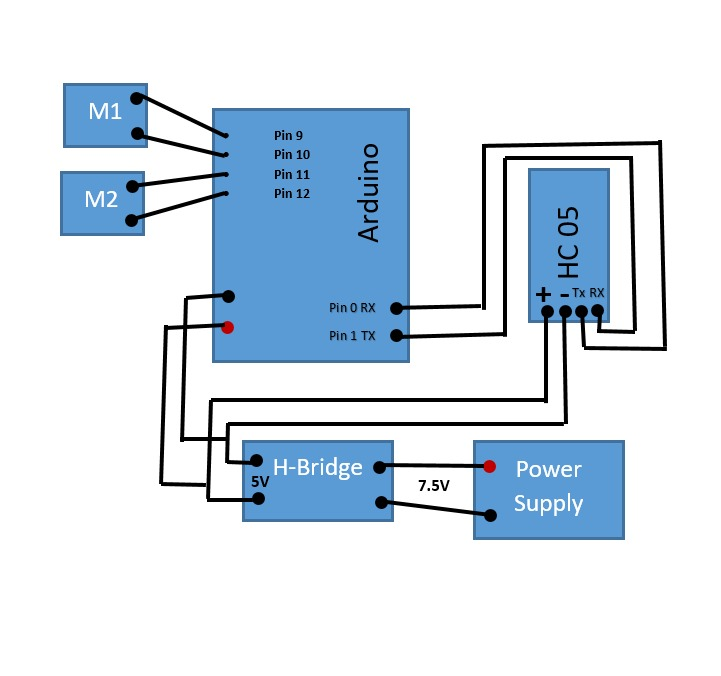
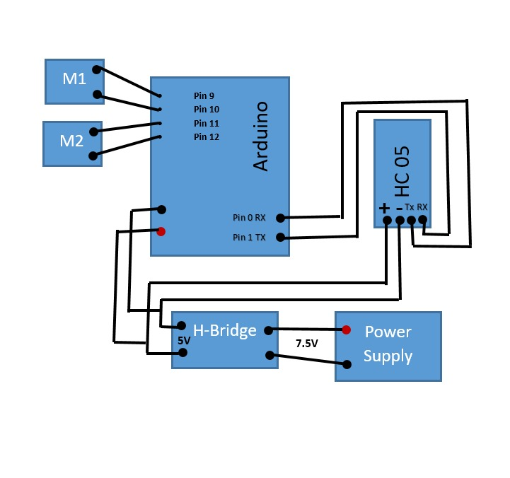

This project is named as educational robot.
In this project we are going to make a robot that will work accurately as per the instructions given by a controller.
The main aim of this project is to build knowledge related to embedded systems.
In this project we will have our own self build android base App by which we will give instructions to our robot.
This projetc works like if we want to make a path for our robot to move certain distance forward, backward, left or right
we will set the position on our app. Further, the robot will get that instructions via reciver and then perform its task.
If we want to reset the position or gives another imstruction to our robot then there will be no need of another program.
For this, we simply change the instructions on the app and the robot will follow that without changing its programming.
This robot can be used for educational activities to make sure the purpose of instruction following.
The distance of the path can be verified using hall effect sensors or using the time to distance formula
which we have prefered in this project
This project will consist of different parts that are given:
1): PCB Design Of Circuit
2): Assembly of the components
3): App Invention
4): App Intraction with hardware
This project is consist of two parts including the software and hardware.
For hardware design we need following components
a):Chassis Board
b):DC Motors
c):Battery
d):Connectors
e):PCB Deigned Board for aurduino and motor driver
f):Bluetooth Module (HC-05)
For software design we need the following things:
a):A computer or laptop with internet access
b):MIT App Inventor(An online website for app development)
c):Good knowledge of programming
While designing the circuit we need a sample which could be look like our project.
After research we come up with idea that how our project will look like.
Below is the attached pictures of the hardware and software design sample.
Our project will be like this.
The Above pictures shown are the sample design of our project but not the axact like this. We have to make a robot and a an android application for our project that will be somthing like this
As we have assigned this task as a semester project and for that we were having months to complete this. So, to complete this within time we divide our task in 4-months in following way:
Task No. |
Task Name |
Months |
| 1 | Literature Review | Sep |
| 2 | Preparation of Schemetic/Model | Oct |
| 3 | Implementation of Schemetic/Model | Nov |
| 4 | Final Design/Write-up | Dec |
As we have mentioned the detail work of our project above so to compelete this project with efficiency we divide this work as follow:
Task Name |
Assigned Person |
| Literature Review | Collective Task |
| Components & its Info | Collective Task |
| Schematic designing & Routing | Collective Task |
| PCB Population | Hamza Ashraf |
| APP Formulation & Programming | Hamza Ashraf |
| Hardware Implementation | Hamza Ashraf |
| Testing/Troubleshooting | Collective Task |
| Documentation | Collective Task |
| Html Report | Hamza Ashraf |
For understanding the working of this project we have made a higher level system diagram for hardware as well as for
softwre as shown below:

There is a reciever and a transmitter is cnnected to recieve and transmit signals that will be given by our android app. Two motors are connected that will work as per the instruction given by the instructor. The Power will be given to H-bridge and the aurdino and that power from the aurdino will be given to bluetooth module. For Software the task will be perormed as per the instruction.
In our project we have used the components in which some components are main and which are expensive too which are given all below:
◘ Arduino
The Arduino Uno is an open-source microcontroller board based on the Microchip ATmega328P microcontroller and developed by Arduino.
The board is equipped with sets of digital and analog input/output pins that may be interfaced
to various expansion boards and other circuits.
◘ IR Sensor
A passive infrared sensor is an electronic sensor that measures infrared light radiating from objects in its field of view.
◘ Hall Effect Sensor
A Hall-effect sensor is a device to measure the magnitude of a magnetic field.
Its output voltage is directly proportional to the magnetic field strength through it.
Hall-effect sensors are used for proximity sensing, positioning, speed detection, and current sensing applications.
◘ Bluetooth Module
HC-05 Bluetooth Module is an easy to use Bluetooth SPP (Serial Port Protocol) module,
designed for transparent wireless serial connection setup.
Its communication is via serial communication which makes an easy way to interface with controller or PC.
◘ Chassis Board With Wheels
◘ Dual H Bridge Motor Driver module
◘ Motors
◘ Li-on Battery
◘ Jumping wires
◘ On/Off Switch
Now for designing PCB, we used Eagle software. The boards of aurduino and of H-bridge has been designed collectively. Those designed are shown below and are designed on eagle.
Most software have their own advantages and drawbacks, but the one we selected Eagle because we have already used this program in previous semesters. Eagle software is a scriptable program with many features, such as schematic capture, design, routing, and computer assisted manufacturing (CA) of printedcircuit boards (PCBs).
The routing phase was very tough for us because from previous one month we was just working on app development and specially developing the logic for given conditions in project. The components placement on right place was a big issue because the main hurdle to resolve was how to avoid overlapping. For example, If we are trying to rout ic with bridge there was overlapping enough. To resolve overlapping and placement we got help by Engr. Faisal Thebo and Engr. Nadir. After getting help them and our hard work of days and nights finally we routed successfully. When we have routed many of components, one more issue we faced was the components that were left could have a possible path to route them, so there we used resistors of 0 ohms to provide path to those components.
After the finishing of these boards, SRM files were generated to get our PCB boards milled by SRM-20 machine available in our Fab-lab. After the milling process, we finally got our PCB boards in our hands.
As of the fabrication done of the circuit the next task is to mount the coponents on the fabricated board. The populated PCB board is shown below.
We were using bootloader connector which was connected to PC through USB port. Then we opened the Arduino program and write the bootloader program there, which was then uploaded to the controller board. Our PCB is worked properly as the bootloading is successfully done and shown an idicator o success by a red LED mounted on board.
While booting the code, we faced a tiny issue but it took 2-3 hours. The issue was that code was successfully burnt but it was not responding after completion. After some tries we noticed that we were giving 5 volt supply and IC (Integrated Circuit) was also attached which required 7.5 voltage minimum. Finally, we overcome this issue by taking out IC from the circuit.
As we have to make an android app so for this we have designed it on mit app inventor whose flow of blocks are as given:


The coding phase was very tricky for us because making an LFR and its programming was very easy for us.
But in this project the challenge was to create logic for buttons so that user just have to push
for example 20 feet right then it should move 20 feet left and 10 feet straight and so on.
INTIALLY Sir Dr. Asim has given us some logic but we was stuck.
After working few days and a guidance about delays by Sir Aizaz we come to know a solution.
We come to know that if we create such a delays and know that if robot is moving one second
and how much distance is covering then we can easily cope up this problem.
We started on that and we have made different set of buttons for left, right, front and back.
In left there was 10, 20,30, and 40 and for right, front and back as well.
Now for 10 we have set if user is pressing 10 right then robot will move 20 melee second to be right and then remaining time straight and all buttons like that.
As this project is consist of a robot and its operating application. The Picture of final assembled hardware is attached below and the interface of the application is also shown in below fig. The hardware is a robot which we called an educational robot which will operate as per the instruction given by the application. The application is consist of pre defined functions like moving forward, backward, left and right but all the functions are subjected as per program and can be changed as instructor like. Final design of hardware and software are shown in the below figures.
Our robot is human controlled which is a great product for child education. By playing with it teacher can easily teach them about distance and Speed as well. So if we make in massive quantity we can easily earn from these robots and in future if we make some changes in it then this could be national or international brand. In the Business our target market will be schools and children. We can easily make a great place in target market because there is no such a great robot of this type in market.
Intellect is the power of the mind, the power of mind to think and imagine and innovate. Intellectual property is that kind of property which is a thought by one’s mind. It is the property over certain ideas of the mind. Certain creations of mind are recognized as special creations and they can be protected through law. Also Intellectual property (IP) refers to creations of the mind, such as inventions; literary and artistic works; designs; and symbols, names and images used in commerce. Here I can Say that for the recognizing such intellectual property of anyone there should be a platform like which is given us Sir Dr Asim Samejo Sb in this Subject “Embedded System”.
There is no use of extra components. All the components used are described below.
Components |
Cost |
| Arduino | 750 |
| Motor-Driver | 250 |
| Chassis board with motors & wheels | 900 |
| Battery | 500 |
| Bluetooth Module | 400 |
| Jumpers | 100 |
Total |
2900 |
This is all about we have done through out this semester. We have tried our level best for making this project possible. During this session we faced a lot of issues as this project was new for us and we learned a lot o things including technical learning, boosting energy even when shed with illness, time managment, project related skills and many more. The credit of all these things goes to Sir Dr. Asim samejho for guiding us in all manners and trust on us and giving us a plateform where we develop our skills not only in term of embedded system project but many more. Special Thanks to sir Nadir, sir Aizaz Larik and sir faisal for helping through out this project.
Educational Robot Arduino Code